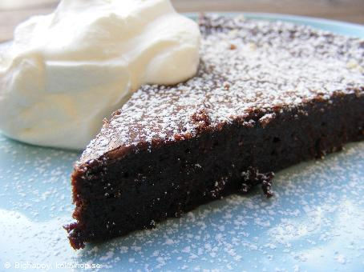

- 100 g smör
- 2½ dl strösocker
- 2 ägg
- 1 dl vetemjöl
- 3 msk kakao
- 1 tsk vaniljsocker
- florsocker
- Vispad grädde
Ingridienser
Garnering
Till servering
Gör såhär:
Sätt ugnen på 175℃. Smält smöret i en kastrull. Lyft av kastrullen från plattan. Rör ner socker och ägg, blanda väl. Rör ner övriga ingredienser så att allt blir väl blandat. Häll smeten i en smord och bröad form med löstagbar kant, ca 24 cm i diameter. Grädda mitt i ugnen ca 15 min. Kakan blir låg med ganska hård yta och lite kladdig i mitten. Låt kakan kallna. Pudra över florsocker. Servera med grädde eller glass och frukt.
Tips
Om du inte vill ha grädde till kakakn kan du servera den med glass och bär som tillbehör istället.